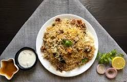

Receipe: Biryani
The word Biryani is derived from the Persian word Birian, which means 'fried before cooking' and Birinj, the Persian word for rice. There are various theories related to the origin of this scrumptious dish. Many historians believe that biryani originated from Persia and was brought to India by the Mughals.
This Delicious Biryani is easy to make and sure to please.
Biryani is a mixed rice dish originating among the Muslims of the Indian subcontinent. It is made with Indian spices, rice, and usually some type of meat (chicken, beef, goat, lamb, prawn, and fish), or in some cases without any meat, and sometimes, in addition, eggs and potatoes.

Ingredients:
- 1 cup boiled basmati rice.
- 600 gm chicken.
- 1/2 teaspoon mint leaves.
- 1 tablespoon garam masala powder.
- 1 teaspoon saffron.
- 2 tablespoon refined oil.
- 1 tablespoon bay leaf.
- 3 green cardamom.
- 2 clove
- 2 onion
- 2 teaspoon turmeric
- 2 teaspoon garlic paste
- Salt and water as required
Steps:
- First of all, take the chicken and wash it thoroughly in water and clean it.
- After that take a bowl, add garam masala, curd, black pepper, salt, and add chicken pieces and mix it well after that keep it for some time.
- After this, take the rice, clean them well and keep them soaked in water for some time according to the need.
- Put the soaked rice on the gas after adding 3 to 4 cups of water according to need.
- After that add cardamom, clove, mint, coriander, and lemon juice to the rice and cook it on low flame, after the rice is cooked, drain its water.
- Put the soaked chicken in a vessel and keep it on the flame to cook for some time.
- After the chicken is cooked, add rice to it, and put fried onions, mint leaves, coriander on top of it.
- After mixing all the ingredients well, add them and mix them well.
- After doing this, cover the vessel with a lid and cover it with a clean cloth so that the steam does not come out.
- Lower the flame and let the vessel cook for 15 to 20 minutes, your hot chicken biryani is ready.